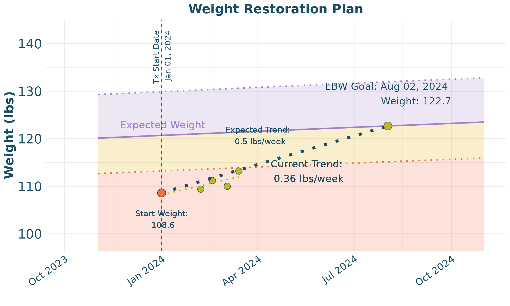

TeenGrowth Vignette
Katherine Schaumberg
2024-07-13
Vignette.RmdIntroduction
This vignette provides a detailed walkthrough on how to use the TeenGrowth package to forecast and visualize BMI data. This guide will cover data cleaning, BMI forecasting, and plotting the results. The TeenGrowth R package is designed for use by eating disorder researchers who have familiarity with R and are interested in forecasting BMI data. For those who are interested in clinical applications of the package through an app, please refer to the TeenGrowth Shiny app.
Clean Data
The first step is to clean the data using the clean_data function. This function prepares the data by standardizing column names and units.
clean_data = clean_data(demo,
id_col_name = 'participant',
age_col_name = 'age',
sex_col_name = 'sex',
ht_col_name = 'height',
wt_col_name = 'weight',
adult_ht_col_name = 'adult_height_in',
ed_aoo_col_name = 'ed_aoo',
ht_unit = 'in',
wt_unit = 'lb')Create BMI Forecasts
Next, we generate BMI forecasts using the forecast_bmi function. This function calculates future BMI values based on the provided data. For the following example, we use the mean BMIz prior to eating disorder onset as our central value for prediction, with a 95% prediction interval.
BMI_forecast <- forecast_bmi(
data = clean_data,
central_value = "mean",
ci = 95)Plot Data
We can now visualize the cleaned data and the BMI forecasts. The
plot_eBMI function is used to plot the estimated BMI data,
while the plot_weight function plots the weight data.
plot_eBMI(clean_data = clean_data,
forecast_data = BMI_forecast,
px = 2)
plot_weight(clean_data = clean_data,
forecast_data = BMI_forecast,
px = 2)10-year BMI and Weight Forecasts
An additional function, clean_forecast_data allows for
the creation of a table that organizes 10-year forecast data (in 6-month
age intervals) for expected BMI and Weight
forecast_data <- clean_forecast_data(BMI_forecast,
px = 2,
model = 'mean')
knitr::kable(forecast_data)| Age | Expected BMI | Expected Weight (lbs) | Expected Weight (kgs) |
|---|---|---|---|
| 15.0 | 18.4 (17.2, 19.7) | 120.7 (113.2, 129.9) | 54.8 (51.4, 58.9) |
| 15.5 | 18.6 (17.5, 20) | 122.4 (114.9, 131.7) | 55.5 (52.1, 59.7) |
| 16.0 | 18.9 (17.7, 20.3) | 124 (116.5, 133.4) | 56.3 (52.8, 60.5) |
| 16.5 | 19.1 (17.9, 20.5) | 125.5 (117.9, 134.9) | 56.9 (53.5, 61.2) |
| 17.0 | 19.3 (18.1, 20.7) | 126.9 (119.3, 136.4) | 57.6 (54.1, 61.9) |
| 17.5 | 19.5 (18.3, 20.9) | 128.2 (120.6, 137.7) | 58.1 (54.7, 62.4) |
| 18.0 | 19.7 (18.5, 21.1) | 129.3 (121.6, 138.8) | 58.6 (55.2, 63) |
| 18.5 | 19.8 (18.6, 21.3) | 130.2 (122.5, 139.8) | 59.1 (55.6, 63.4) |
| 19.0 | 19.9 (18.7, 21.4) | 131 (123.2, 140.7) | 59.4 (55.9, 63.8) |
| 19.5 | 20 (18.8, 21.5) | 131.5 (123.6, 141.3) | 59.6 (56.1, 64.1) |
| 20.0 | 20 (18.8, 21.6) | 131.8 (123.8, 141.8) | 59.8 (56.2, 64.3) |
| 20.5 | 20 (18.8, 21.6) | 131.8 (123.8, 141.9) | 59.8 (56.2, 64.4) |
| 21.0 | 20 (18.8, 21.6) | 131.8 (123.8, 141.9) | 59.8 (56.2, 64.4) |
| 21.5 | 20 (18.8, 21.6) | 131.8 (123.8, 141.9) | 59.8 (56.2, 64.4) |
| 22.0 | 20 (18.8, 21.6) | 131.8 (123.8, 141.9) | 59.8 (56.2, 64.4) |
| 22.5 | 20 (18.8, 21.6) | 131.8 (123.8, 141.9) | 59.8 (56.2, 64.4) |
| 23.0 | 20 (18.8, 21.6) | 131.8 (123.8, 141.9) | 59.8 (56.2, 64.4) |
| 23.5 | 20 (18.8, 21.6) | 131.8 (123.8, 141.9) | 59.8 (56.2, 64.4) |
| 24.0 | 20 (18.8, 21.6) | 131.8 (123.8, 141.9) | 59.8 (56.2, 64.4) |
| 24.5 | 20 (18.8, 21.6) | 131.8 (123.8, 141.9) | 59.8 (56.2, 64.4) |
Weight Restoration Planning
Finally, we provide an example of how to use the package for
treatment planning. In this case, a specific participant is identified,
then the data is prepared for plotting with tx_plot_clean,
and then a weight restoration plot is able to be derived using the
Wt_Restore_Plot function.
wt_restore <- demo |> filter(participant == 2)
wt_restore_clean <- tx_plot_clean(wt_restore,
age_col_name = 'age',
age_unit = 'years',
ht_col_name = 'height',
wt_col_name = 'weight',
adult_ht = wt_restore$adult_height_in[1],
ht_unit = 'in',
wt_unit = 'lb',
dob = '2009-01-01',
tx_start_date = '2024-01-01')
wt_restore_forecast <- BMI_forecast |> filter (id == 2)
Wt_Restore_Plot(wt_restore_clean,
wt_restore_forecast,
slope_per_week = 0.5)